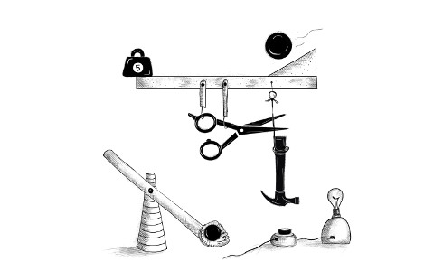

الفصل 15
معالجة الأحداث
لك سلطان على عقلك — لا على الأحداث الخارجية. أدرك هذا، وستجد القوة.
— ماركوس أوريليوس، تأملات

بعض البرامج تعمل بمدخلات مباشرة من المستخدم، مثل حركات الفأرة وضغطات لوحة المفاتيح. وهذا النوع من المدخلات لا يكون متاحاً مسبقاً في هيئة بنية بيانات منظمة تنظيماً جيداً — بل يصل قطعة قطعة، في الزمن الحقيقي، وعلى البرنامج أن يستجيب له فور حدوثه.
معالجات الأحداث
تخيل واجهة تكون الطريقة الوحيدة لمعرفة ما إذا كان مفتاح على لوحة المفاتيح مضغوطاً فيها هي قراءة الحالة الراهنة لذلك المفتاح. ولكي تستطيع التفاعل مع ضغطات المفاتيح، سيكون عليك قراءة حالة المفتاح باستمرار لالتقاطه قبل أن يُفلت مجدداً. وسيكون من الخطر إجراء حسابات أخرى مستهلكة للوقت، لأنك قد تفوتك ضغطة مفتاح.
تتعامل بعض الأجهزة البدائية مع المدخلات بهذه الطريقة. والخطوة الأرقى من ذلك هي أن يلاحظ العتاد أو نظام التشغيل ضغطة المفتاح ويضعها في طابور. فيمكن للبرنامج حينئذ أن يفحص الطابور دورياً بحثاً عن أحداث جديدة ويتفاعل مع ما يجده فيه.
بالطبع، على البرنامج أن يتذكر النظر إلى الطابور، وأن يفعل ذلك كثيراً، لأن أي وقت يمضي بين ضغط المفتاح وملاحظة البرنامج الحدث سيجعل البرمجيات تبدو غير مستجيبة. وتسمى هذه المقاربة الاستقصاء (polling). ويفضّل معظم المبرمجين تجنبها.
الآلية الأفضل هي أن يُخطر النظام الشيفرة بنشاط عند وقوع حدث. وتفعل المتصفحات ذلك بأن تتيح لنا تسجيل دوال بوصفها معالجات (handlers) لأحداث محددة.
<p>Click this document to activate the handler.</p>
<script>
window.addEventListener("click", () => {
console.log("You knocked?");
});
</script>
يشير ارتباط window إلى كائن مدمج يوفره المتصفح. وهو يمثل نافذة المتصفح التي تحتوي المستند. واستدعاء طريقة addEventListener الخاصة به يسجّل المعطى الثاني ليُستدعى كلما وقع الحدث الذي يصفه المعطى الأول.
الأحداث وعقد DOM
يُسجَّل كل معالج حدث في المتصفح داخل سياق. وفي المثال السابق، استدعينا addEventListener على الكائن window لتسجيل معالج للنافذة كلها. ويمكن العثور على طريقة كهذه أيضاً على عناصر DOM وعلى بعض الأنواع الأخرى من الكائنات. ولا تُستدعى مستمعات الأحداث إلا عندما يقع الحدث في سياق الكائن المسجَّلة عليه.
<button>Click me</button>
<p>No handler here.</p>
<script>
let button = document.querySelector("button");
button.addEventListener("click", () => {
console.log("Button clicked.");
});
</script>
يربط هذا المثال معالجاً بعقدة الزر. فتؤدي النقرات على الزر إلى تشغيل ذلك المعالج، أما النقرات على بقية المستند فلا تفعل ذلك.
وإعطاء عقدة خاصية onclick له أثر مشابه. وهذا يعمل مع معظم أنواع الأحداث — يمكنك ربط معالج عبر الخاصية التي يكون اسمها اسم الحدث مسبوقاً بـon.
لكن العقدة لا يمكن أن تحمل إلا خاصية onclick واحدة، لذا لا يمكنك تسجيل إلا معالج واحد لكل عقدة بهذه الطريقة. أما طريقة addEventListener فتتيح لك إضافة أي عدد من المعالجات، بمعنى أنه من الآمن إضافة معالجات حتى لو كان هناك معالج آخر على العنصر بالفعل.
وطريقة removeEventListener، التي تُستدعى بمعطيات مشابهة لـaddEventListener، تزيل معالجاً.
<button>Act-once button</button>
<script>
let button = document.querySelector("button");
function once() {
console.log("Done.");
button.removeEventListener("click", once);
}
button.addEventListener("click", once);
</script>
يجب أن تكون الدالة المعطاة لـremoveEventListener هي نفس قيمة الدالة المعطاة لـaddEventListener. وعندما تحتاج إلى إلغاء تسجيل معالج، ستحتاج إلى إعطاء دالة المعالج اسماً (once، في المثال) لتتمكن من تمرير نفس قيمة الدالة إلى الطريقتين.
كائنات الأحداث
رغم أننا تجاهلناه حتى الآن، فإن دوال معالجات الأحداث تُمرَّر إليها معطى: كائن الحدث. ويحمل هذا الكائن معلومات إضافية عن الحدث. فمثلاً، إذا أردنا معرفة أي زر من أزرار الفأرة ضُغط، يمكننا النظر إلى خاصية button في كائن الحدث.
<button>Click me any way you want</button>
<script>
let button = document.querySelector("button");
button.addEventListener("mousedown", event => {
if (event.button == 0) {
console.log("Left button");
} else if (event.button == 1) {
console.log("Middle button");
} else if (event.button == 2) {
console.log("Right button");
}
});
</script>
تختلف المعلومات المخزنة في كائن الحدث باختلاف نوع الحدث. (سنناقش أنواعاً مختلفة لاحقاً في هذا الفصل.) وتحمل خاصية type في الكائن دائماً نصاً يعرّف الحدث (مثل "click" أو "mousedown").
الانتشار
بالنسبة لمعظم أنواع الأحداث، ستتلقى المعالجات المسجَّلة على عقد لها أبناء أحداثاً تقع في الأبناء أيضاً. فإذا نُقر على زر داخل فقرة، سترى معالجات الأحداث على الفقرة حدث النقر أيضاً.
لكن إذا كان لكل من الفقرة والزر معالج، فإن المعالج الأكثر تحديداً — ذاك الموجود على الزر — يحصل على الدور أولاً. ويقال إن الحدث ينتشر (propagate) إلى الخارج من العقدة التي وقع فيها إلى العقدة الأب لتلك العقدة وصولاً إلى جذر المستند. وأخيراً، بعد أن يأخذ كل المعالجات المسجَّلة على عقدة معينة دورها، تحصل المعالجات المسجَّلة على النافذة كلها على فرصة للاستجابة للحدث.
وفي أي لحظة، يمكن لمعالج الحدث استدعاء طريقة stopPropagation على كائن الحدث لمنع المعالجات الأعلى من تلقي الحدث. ويمكن أن يكون هذا مفيداً عندما يكون لديك، مثلاً، زر داخل عنصر آخر قابل للنقر ولا تريد أن تنشّط النقرات على الزر سلوك النقر الخاص بالعنصر الخارجي.
يسجّل المثال التالي معالجي "mousedown" على زر وعلى الفقرة المحيطة به. وعند النقر بزر الفأرة الأيمن، يستدعي معالج الزر stopPropagation، ما يمنع معالج الفقرة من العمل. وعند النقر على الزر بزر آخر، يعمل المعالجان كليهما.
<p>A paragraph with a <button>button</button>.</p>
<script>
let para = document.querySelector("p");
let button = document.querySelector("button");
para.addEventListener("mousedown", () => {
console.log("Handler for paragraph.");
});
button.addEventListener("mousedown", event => {
console.log("Handler for button.");
if (event.button == 2) event.stopPropagation();
});
</script>
لمعظم كائنات الأحداث خاصية target تشير إلى العقدة التي نشأ فيها الحدث. ويمكنك استخدام هذه الخاصية لتتأكد من أنك لا تتعامل عن غير قصد مع شيء انتشر إلى الأعلى من عقدة لا تريد التعامل معها.
ومن الممكن أيضاً استخدام خاصية target لإلقاء شبكة واسعة على نوع محدد من الأحداث. فمثلاً، إذا كانت لديك عقدة تحتوي قائمة طويلة من الأزرار، فقد يكون من الأنسب تسجيل معالج نقر واحد على العقدة الخارجية وجعله يستخدم خاصية target ليعرف ما إذا كان قد نُقر على زر، بدلاً من تسجيل معالجات فردية على كل الأزرار.
<button>A</button>
<button>B</button>
<button>C</button>
<script>
document.body.addEventListener("click", event => {
if (event.target.nodeName == "BUTTON") {
console.log("Clicked", event.target.textContent);
}
});
</script>
الإجراءات الافتراضية
لكثير من الأحداث إجراء افتراضي. فإذا نقرت على رابط، ستُنقل إلى هدف الرابط. وإذا ضغطت السهم لأسفل، سيمرّر المتصفح الصفحة إلى الأسفل. وإذا نقرت بزر الفأرة الأيمن، ستحصل على قائمة سياق. وهكذا.
بالنسبة لمعظم أنواع الأحداث، تُستدعى معالجات أحداث JavaScript قبل حدوث السلوك الافتراضي. وإذا لم يرد المعالج أن يحدث هذا السلوك الطبيعي، عادةً لأنه تعامل بالفعل مع الحدث، فيمكنه استدعاء طريقة preventDefault على كائن الحدث.
ويمكن استخدام هذا لتنفيذ اختصارات لوحة مفاتيح أو قائمة سياق خاصة بك. ويمكن أيضاً استخدامه للتدخل بشكل مزعج في السلوك الذي يتوقعه المستخدمون. فمثلاً، هذا رابط لا يمكن اتباعه:
<a href="https://developer.mozilla.org/">MDN</a>
<script>
let link = document.querySelector("a");
link.addEventListener("click", event => {
console.log("Nope.");
event.preventDefault();
});
</script>
حاول ألا تفعل أشياء كهذه دون سبب وجيه حقاً. فسيكون الأمر غير سار لمن يستخدمون صفحتك عندما يتعطل السلوك المتوقع.
واعتماداً على المتصفح، بعض الأحداث لا يمكن اعتراضها إطلاقاً. ففي Chrome، مثلاً، لا يمكن التعامل بـJavaScript مع اختصار لوحة المفاتيح لإغلاق التبويب الحالي (ctrl-W أو command-W).
أحداث المفاتيح
عند ضغط مفتاح على لوحة المفاتيح، يطلق متصفحك حدث "keydown". وعند إفلاته، تحصل على حدث "keyup".
<p>This page turns violet when you hold the V key.</p>
<script>
window.addEventListener("keydown", event => {
if (event.key == "v") {
document.body.style.background = "violet";
}
});
window.addEventListener("keyup", event => {
if (event.key == "v") {
document.body.style.background = "";
}
});
</script>
رغم اسمه، لا يُطلق "keydown" فقط عند ضغط المفتاح فعلياً إلى الأسفل. فعندما يُضغط مفتاح ويُستمر في ضغطه، يُطلق الحدث مجدداً في كل مرة يتكرر فيها المفتاح. وأحياناً عليك توخي الحذر بشأن هذا. فمثلاً، إذا أضفت زراً إلى DOM عند ضغط مفتاح وأزلته مجدداً عند إفلاته، فقد تضيف مئات الأزرار عن غير قصد عندما يُستمر في ضغط المفتاح مدة أطول.
ينظر المثال السابق إلى خاصية key في كائن الحدث لمعرفة المفتاح الذي يخصه الحدث. وتحمل هذه الخاصية نصاً يقابل، بالنسبة لمعظم المفاتيح، الشيء الذي سيطبعه ضغط ذلك المفتاح. أما المفاتيح الخاصة مثل enter، فتحمل نصاً يسمّي المفتاح ("Enter"، في هذه الحالة). وإذا أبقيت shift مضغوطاً أثناء ضغط مفتاح، فقد يؤثر ذلك أيضاً في اسم المفتاح — فيصبح "v" هو "V"، وقد يصبح "1" هو "!"، إذا كان هذا ما ينتج عن ضغط shift-1 على لوحة مفاتيحك.
تولّد مفاتيح التعديل مثل shift وctrl وalt وmeta (command على Mac) أحداث مفاتيح تماماً كالمفاتيح العادية. وعند البحث عن تركيبات المفاتيح، يمكنك أيضاً معرفة ما إذا كانت هذه المفاتيح مضغوطة بالنظر إلى خصائص shiftKey وctrlKey وaltKey وmetaKey في أحداث لوحة المفاتيح والفأرة.
<p>Press Control-Space to continue.</p>
<script>
window.addEventListener("keydown", event => {
if (event.key == " " && event.ctrlKey) {
console.log("Continuing!");
}
});
</script>
تعتمد عقدة DOM التي ينشأ فيها حدث المفتاح على العنصر الذي يحمل التركيز عند ضغط المفتاح. ومعظم العقد لا يمكنها حمل التركيز إلا إذا أعطيتها خاصية tabindex، لكن أشياء مثل الروابط والأزرار وحقول النماذج يمكنها ذلك. وسنعود إلى حقول النماذج في الفصل 18. وعندما لا يحمل أي شيء بعينه التركيز، يعمل document.body بوصفه العقدة الهدف لأحداث المفاتيح.
عندما يكتب المستخدم نصاً، يكون استخدام أحداث المفاتيح لمعرفة ما يُكتب إشكالياً. فبعض المنصات، وأبرزها لوحة المفاتيح الافتراضية على هواتف Android، لا تطلق أحداث مفاتيح. ولكن حتى عندما تكون لديك لوحة مفاتيح تقليدية، فإن بعض أنواع إدخال النص لا تطابق ضغطات المفاتيح بطريقة مباشرة، مثل برمجيات محرر أسلوب الإدخال (IME) التي يستخدمها من لا تناسب كتاباتهم لوحة المفاتيح، حيث تُدمج ضغطات مفاتيح متعددة لإنشاء محارف.
ولملاحظة متى كُتب شيء، تطلق العناصر التي يمكنك الكتابة فيها، مثل وسمي <input> و<textarea>، أحداث "input" كلما غيّر المستخدم محتواها. وللحصول على المحتوى الفعلي الذي كُتب، من الأفضل قراءته مباشرة من الحقل الذي يحمل التركيز، وهو ما نناقشه في الفصل 18.
أحداث المؤشر
توجد حالياً طريقتان شائعتان للإشارة إلى الأشياء على الشاشة: الفأرة (بما فيها الأجهزة التي تعمل عمل الفأرة، مثل لوحات اللمس وكرات التعقب) وشاشات اللمس. وهذه تنتج أنواعاً مختلفة من الأحداث.
نقرات الفأرة
يؤدي ضغط زر الفأرة إلى إطلاق عدد من الأحداث. وحدثا "mousedown" و"mouseup" مشابهان لـ"keydown" و"keyup" ويُطلقان عند ضغط الزر وإفلاته. وتقع هذه على عقد DOM الواقعة مباشرة تحت مؤشر الفأرة عند وقوع الحدث.
وبعد حدث "mouseup"، يُطلق حدث "click" على العقدة الأكثر تحديداً التي احتوت ضغط الزر وإفلاته معاً. فمثلاً، إذا ضغطت زر الفأرة على فقرة ثم حرّكت المؤشر إلى فقرة أخرى وأفلت الزر، فسيقع حدث "click" على العنصر الذي يحتوي هاتين الفقرتين.
وإذا وقع نقران قريبين من بعضهما، يُطلق أيضاً حدث "dblclick" (النقر المزدوج)، بعد حدث النقر الثاني.
وللحصول على معلومات دقيقة عن الموضع الذي وقع فيه حدث الفأرة، يمكنك النظر إلى خاصيتي clientX وclientY، وهما تحتويان إحداثيات الحدث (بالبكسل) نسبةً إلى الزاوية العلوية اليسرى للنافذة، أو pageX وpageY، وهما نسبةً إلى الزاوية العلوية اليسرى للمستند كله (وقد يختلفان عندما تكون النافذة قد مُرّرت).
ينفذ البرنامج التالي تطبيق رسم بدائياً. ففي كل مرة تنقر فيها على المستند، يضيف نقطة تحت مؤشر الفأرة.
<style>
body {
height: 200px;
background: beige;
}
.dot {
height: 8px; width: 8px;
border-radius: 4px; /* يقرّب الزوايا */
background: teal;
position: absolute;
}
</style>
<script>
window.addEventListener("click", event => {
let dot = document.createElement("div");
dot.className = "dot";
dot.style.left = (event.pageX - 4) + "px";
dot.style.top = (event.pageY - 4) + "px";
document.body.appendChild(dot);
});
</script>
سننشئ تطبيق رسم أقل بدائية في الفصل 19.
حركة الفأرة
في كل مرة يتحرك فيها مؤشر الفأرة، يُطلق حدث "mousemove". ويمكن استخدام هذا الحدث لتتبع موضع الفأرة. ومن المواقف الشائعة التي يكون فيها هذا مفيداً تنفيذ شكل من أشكال وظيفة السحب بالفأرة.
وكمثال، يعرض البرنامج التالي شريطاً ويُنشئ معالجات أحداث بحيث يؤدي السحب إلى اليسار أو اليمين عليه إلى تضييقه أو توسيعه:
<p>Drag the bar to change its width:</p>
<div style="background: orange; width: 60px; height: 20px">
</div>
<script>
let lastX; // يتتبع آخر موضع X مرصود للفأرة
let bar = document.querySelector("div");
bar.addEventListener("mousedown", event => {
if (event.button == 0) {
lastX = event.clientX;
window.addEventListener("mousemove", moved);
event.preventDefault(); // منع التحديد
}
});
function moved(event) {
if (event.buttons == 0) {
window.removeEventListener("mousemove", moved);
} else {
let dist = event.clientX - lastX;
let newWidth = Math.max(10, bar.offsetWidth + dist);
bar.style.width = newWidth + "px";
lastX = event.clientX;
}
}
</script>
لاحظ أن معالج "mousemove" مسجَّل على النافذة كلها. فحتى لو خرجت الفأرة من الشريط أثناء تغيير الحجم، فطالما بقي الزر مضغوطاً، ما زلنا نريد تحديث حجمه.
يجب أن نتوقف عن تغيير حجم الشريط عند إفلات زر الفأرة. ولهذا يمكننا استخدام خاصية buttons (لاحظ صيغة الجمع)، التي تخبرنا عن الأزرار المضغوطة حالياً. فعندما تكون قيمتها 0، لا يكون أي زر مضغوطاً. وعندما تكون الأزرار مضغوطة، تكون قيمة خاصية buttons مجموع رموز تلك الأزرار — فللزر الأيسر الرمز 1، وللأيمن 2، وللأوسط 4. فمع ضغط الزرين الأيسر والأيمن مثلاً، تكون قيمة buttons هي 3.
لاحظ أن ترتيب هذه الرموز مختلف عن الترتيب المستخدم في button، حيث جاء الزر الأوسط قبل الأيمن. وكما ذُكر، ليس الاتساق نقطة قوة في واجهة برمجة المتصفح.
أحداث اللمس
صُمم نمط المتصفح الرسومي الذي نستخدمه واضعاً في الاعتبار واجهات الفأرة، في زمن كانت فيه شاشات اللمس نادرة. ولجعل الويب «يعمل» على هواتف شاشات اللمس المبكرة، تظاهرت متصفحات تلك الأجهزة، إلى حد ما، بأن أحداث اللمس أحداث فأرة. فإذا نقرت على شاشتك نقرة خفيفة، ستحصل على أحداث "mousedown" و"mouseup" و"click".
لكن هذا الوهم ليس متيناً كثيراً. فشاشة اللمس لا تعمل عمل الفأرة: فليس فيها أزرار متعددة، ولا يمكنك تتبع الإصبع عندما لا يكون على الشاشة (لمحاكاة "mousemove")، وهي تتيح وجود أصابع متعددة على الشاشة في الوقت نفسه.
وتغطي أحداث الفأرة تفاعل اللمس في الحالات المباشرة فقط — فإذا أضفت معالج "click" إلى زر، فسيظل مستخدمو اللمس قادرين على استخدامه. لكن شيء مثل الشريط القابل لتغيير الحجم في المثال السابق لا يعمل على شاشة لمس.
توجد أنواع أحداث محددة تطلقها تفاعلات اللمس. فعندما يبدأ إصبع بلمس الشاشة، تحصل على حدث "touchstart". وعندما يتحرك وهو يلمسها، تُطلق أحداث "touchmove". وأخيراً، عندما يتوقف عن لمس الشاشة، سترى حدث "touchend".
ولأن كثيراً من شاشات اللمس يمكنها كشف أصابع متعددة في الوقت نفسه، فليس لهذه الأحداث مجموعة إحداثيات واحدة مرتبطة بها. بل تحتوي كائنات أحداثها على خاصية touches، وهي تحمل كائناً شبيهًا بالمصفوفة من النقاط، لكل منها خصائصه الخاصة clientX وclientY وpageX وpageY.
ويمكنك فعل شيء كهذا لإظهار دوائر حمراء حول كل إصبع يلمس الشاشة:
<style>
dot { position: absolute; display: block;
border: 2px solid red; border-radius: 50px;
height: 100px; width: 100px; }
</style>
<p>Touch this page</p>
<script>
function update(event) {
for (let dot; dot = document.querySelector("dot");) {
dot.remove();
}
for (let i = 0; i < event.touches.length; i++) {
let {pageX, pageY} = event.touches[i];
let dot = document.createElement("dot");
dot.style.left = (pageX - 50) + "px";
dot.style.top = (pageY - 50) + "px";
document.body.appendChild(dot);
}
}
window.addEventListener("touchstart", update);
window.addEventListener("touchmove", update);
window.addEventListener("touchend", update);
</script>
غالباً ما ستحتاج إلى استدعاء preventDefault في معالجات أحداث اللمس لتجاوز السلوك الافتراضي للمتصفح (الذي قد يشمل تمرير الصفحة عند السحب) ولمنع إطلاق أحداث الفأرة، التي قد يكون لديك معالج لها أيضاً.
أحداث التمرير
كلما مُرّر عنصر، يُطلق عليه حدث "scroll". ولهذا استخدامات متنوعة، مثل معرفة ما ينظر إليه المستخدم حالياً (لتعطيل الحركات خارج الشاشة أو لإرسال تقارير تجسس إلى مقر قيادتك الشريرة) أو إظهار نوع من مؤشر التقدم (بتظليل جزء من جدول محتويات أو بعرض رقم صفحة).
يرسم المثال التالي شريط تقدم أعلى المستند ويحدّثه ليمتلئ كلما مرّرت إلى الأسفل:
<style>
#progress {
border-bottom: 2px solid blue;
width: 0;
position: fixed;
top: 0; left: 0;
}
</style>
<div id="progress"></div>
<script>
// إنشاء بعض المحتوى
document.body.appendChild(document.createTextNode(
"supercalifragilisticexpialidocious ".repeat(1000)));
let bar = document.querySelector("#progress");
window.addEventListener("scroll", () => {
let max = document.body.scrollHeight - innerHeight;
bar.style.width = `${(pageYOffset / max) * 100}%`;
});
</script>
إعطاء عنصر position قيمتها fixed يعمل كثيراً كالموضع absolute لكنه يمنعه أيضاً من التمرير مع بقية المستند. والأثر هو أن يبقى شريط التقدم لدينا في الأعلى. ويتغير عرضه للإشارة إلى التقدم الحالي. ونستخدم % بدلاً من px كوحدة عند ضبط العرض حتى يُقاس حجم العنصر نسبةً إلى عرض الصفحة.
يعطينا الارتباط العام innerHeight ارتفاع النافذة، الذي يجب أن نطرحه من الارتفاع الكلي القابل للتمرير — فلا يمكنك مواصلة التمرير عندما تصل إلى أسفل المستند. ويوجد أيضاً innerWidth لعرض النافذة. وبقسمة pageYOffset، وهو موضع التمرير الحالي، على موضع التمرير الأقصى وضرب الناتج في 100، نحصل على النسبة المئوية لشريط التقدم.
استدعاء preventDefault على حدث تمرير لا يمنع التمرير من الحدوث. بل في الواقع، لا يُستدعى معالج الحدث إلا بعد حدوث التمرير.
أحداث التركيز
عندما يحصل عنصر على التركيز، يطلق المتصفح عليه حدث "focus". وعندما يفقده، يتلقى العنصر حدث "blur".
وعلى عكس الأحداث التي نوقشت سابقاً، لا ينتشر هذان الحدثان. فلا يُخطَر معالج على عنصر أب عندما يحصل عنصر ابن على التركيز أو يفقده.
يعرض المثال التالي نص مساعدة لحقل النص الذي يحمل التركيز حالياً:
<p>Name: <input type="text" data-help="Your full name"></p>
<p>Age: <input type="text" data-help="Your age in years"></p>
<p id="help"></p>
<script>
let help = document.querySelector("#help");
let fields = document.querySelectorAll("input");
for (let field of Array.from(fields)) {
field.addEventListener("focus", event => {
let text = event.target.getAttribute("data-help");
help.textContent = text;
});
field.addEventListener("blur", event => {
help.textContent = "";
});
}
</script>
سيتلقى الكائن window حدثي "focus" و"blur" عندما ينتقل المستخدم من تبويب المتصفح أو نافذته التي يُعرض فيها المستند أو إليها.
حدث التحميل
عندما ينتهي تحميل صفحة، يُطلق حدث "load" على الكائنين window وdocument body. ويُستخدم هذا غالباً لجدولة إجراءات تهيئة تتطلب أن يكون المستند كله قد بُني. وتذكّر أن محتوى وسوم <script> يُنفَّذ فوراً عند مصادفة الوسم. وقد يكون هذا مبكراً جداً، مثلاً عندما تحتاج الشيفرة إلى فعل شيء بأجزاء من المستند تظهر بعد وسم <script>.
وللعناصر التي تحمّل ملفاً خارجياً، مثل الصور ووسوم السكربت، حدث "load" أيضاً يشير إلى أن الملفات التي تشير إليها قد حُمّلت. ومثل الأحداث المتعلقة بالتركيز، لا تنتشر أحداث التحميل.
وعندما تغلق الصفحة أو تنتقل بعيداً عنها (مثلاً، باتباع رابط)، يُطلق حدث "beforeunload". والاستخدام الرئيسي لهذا الحدث هو منع المستخدم من فقدان عمله عن غير قصد بإغلاق مستند. وإذا منعت السلوك الافتراضي على هذا الحدث وضبطت خاصية returnValue في كائن الحدث على نص، فسيعرض المتصفح للمستخدم حواراً يسأله إن كان يريد حقاً مغادرة الصفحة. وقد يتضمن ذلك الحوار نصك، لكن لأن بعض المواقع الخبيثة تحاول استخدام هذه الحوارات لتشويش الناس ليبقوا على صفحتها للنظر في إعلانات فقدان الوزن المشبوهة، لم تعد معظم المتصفحات تعرضها.
الأحداث وحلقة الأحداث
في سياق حلقة الأحداث، كما نوقش في الفصل 11، تتصرف معالجات أحداث المتصفح كغيرها من الإشعارات غير المتزامنة. فهي تُجدول عند وقوع الحدث لكن عليها انتظار انتهاء السكربتات الأخرى التي تعمل قبل أن تحصل على فرصة للعمل.
وكون الأحداث لا يمكن معالجتها إلا عندما لا يكون شيء آخر يعمل يعني أنه إذا كانت حلقة الأحداث مشغولة بعمل آخر، فإن أي تفاعل مع الصفحة (وهو يحدث عبر الأحداث) سيتأخر حتى يتوفر وقت لمعالجته. لذا إذا جدولت عملاً أكثر من اللازم، سواء بمعالجات أحداث طويلة التشغيل أو بالكثير من المعالجات قصيرة التشغيل، فستصبح الصفحة بطيئة ومرهقة في الاستخدام.
وفي الحالات التي تريد فيها حقاً فعل شيء مستهلك للوقت في الخلفية دون تجميد الصفحة، توفر المتصفحات شيئاً يُسمى عمال الويب (web workers). والعامل عملية JavaScript تعمل إلى جانب السكربت الرئيسي، على خط زمني خاص بها.
تخيل أن تربيع عدد حساب ثقيل طويل التشغيل نريد إجراءه في خيط منفصل. يمكننا كتابة ملف يُسمى code/squareworker.js يستجيب للرسائل بحساب مربع وإرسال رسالة عائدة.
addEventListener("message", event => {
postMessage(event.data * event.data);
});
لتجنب مشكلات وجود خيوط متعددة تلمس البيانات نفسها، لا يتشارك العمال نطاقهم العام أو أي بيانات أخرى مع بيئة السكربت الرئيسي. بل عليك التواصل معهم بإرسال الرسائل ذهاباً وإياباً.
تولّد هذه الشيفرة عاملاً يشغّل ذلك السكربت، وترسل إليه بضع رسائل، وتُخرج الاستجابات.
let squareWorker = new Worker("code/squareworker.js");
squareWorker.addEventListener("message", event => {
console.log("The worker responded:", event.data);
});
squareWorker.postMessage(10);
squareWorker.postMessage(24);
ترسل دالة postMessage رسالة، ما سيؤدي إلى إطلاق حدث "message" في المستقبِل. والسكربت الذي أنشأ العامل يرسل الرسائل ويستقبلها عبر كائن Worker، أما العامل فيتحدث إلى السكربت الذي أنشأه بإرسال الرسائل والاستماع إليها مباشرة على نطاقه العام. ولا يمكن إرسال كرسائل إلا القيم التي يمكن تمثيلها بصيغة JSON — وسيتلقى الطرف الآخر نسخة منها، لا القيمة نفسها.
المؤقتات
دالة setTimeout التي رأيناها في الفصل 11 تجدول دالة أخرى لتُستدعى لاحقاً، بعد عدد معين من المللي ثانية. وأحياناً تحتاج إلى إلغاء دالة جدولتها. ويمكنك فعل ذلك بتخزين القيمة التي أرجعتها setTimeout واستدعاء clearTimeout عليها.
let bombTimer = setTimeout(() => {
console.log("BOOM!");
}, 500);
if (Math.random() < 0.5) { // احتمال 50%
console.log("Defused.");
clearTimeout(bombTimer);
}
وتعمل دالة cancelAnimationFrame بالطريقة نفسها التي تعمل بها clearTimeout. فاستدعاؤها على قيمة أرجعتها requestAnimationFrame سيلغي ذلك الإطار (بافتراض أنه لم يُستدع بعد).
وتُستخدم مجموعة مشابهة من الدوال، setInterval وclearInterval، لضبط مؤقتات يجب أن تتكرر كل X مللي ثانية.
let ticks = 0;
let clock = setInterval(() => {
console.log("tick", ticks++);
if (ticks == 10) {
clearInterval(clock);
console.log("stop.");
}
}, 200);
إبطاء الأحداث
بعض أنواع الأحداث قد تُطلق بسرعة مرات كثيرة على التوالي، مثل حدثي "mousemove" و"scroll". وعند التعامل مع مثل هذه الأحداث، عليك الحذر ألا تفعل شيئاً مستهلكاً للوقت أكثر من اللازم، وإلا سيستغرق معالجك وقتاً طويلاً بحيث يبدأ التفاعل مع المستند يبدو بطيئاً.
وإذا احتجت فعلاً إلى فعل شيء غير بسيط في معالج كهذا، فيمكنك استخدام setTimeout لتتأكد من أنك لا تفعله كثيراً جداً. ويُسمى هذا عادةً إبطاء الحدث (debouncing). وتوجد عدة مقاربات مختلفة قليلاً لهذا.
فمثلاً، لنفترض أننا نريد التفاعل عندما يكتب المستخدم شيئاً، لكننا لا نريد فعل ذلك فوراً عند كل حدث إدخال. فعندما يكتب بسرعة، نريد فقط الانتظار حتى تحدث وقفة. وبدلاً من تنفيذ إجراء فوراً في معالج الحدث، نضبط مهلة زمنية. ونلغي أيضاً المهلة السابقة (إن وُجدت) حتى تُلغى المهلة من الحدث السابق عندما تقع الأحداث قريبة من بعضها (أقرب من مهلة التأخير لدينا).
<textarea>Type something here...</textarea>
<script>
let textarea = document.querySelector("textarea");
let timeout;
textarea.addEventListener("input", () => {
clearTimeout(timeout);
timeout = setTimeout(() => console.log("Typed!"), 500);
});
</script>
إعطاء قيمة undefined لـclearTimeout أو استدعاؤها على مهلة أُطلقت بالفعل ليس له أثر. لذا لا داعي للحرص على توقيت استدعائها، ونفعل ذلك ببساطة عند كل حدث.
يمكننا استخدام نمط مختلف قليلاً إذا أردنا تباعد الاستجابات بحيث تفصل بينها مدة زمنية معينة على الأقل، لكن أردنا إطلاقها خلال سلسلة من الأحداث، لا بعدها فقط. فمثلاً، قد نريد الاستجابة لأحداث "mousemove" بعرض الإحداثيات الحالية للفأرة، ولكن كل 250 مللي ثانية فقط.
<script>
let scheduled = null;
window.addEventListener("mousemove", event => {
if (!scheduled) {
setTimeout(() => {
document.body.textContent =
`Mouse at ${scheduled.pageX}, ${scheduled.pageY}`;
scheduled = null;
}, 250);
}
scheduled = event;
});
</script>
الملخص
تجعل معالجات الأحداث من الممكن كشف الأحداث الواقعة في صفحة الويب والتفاعل معها. وتُستخدم طريقة addEventListener لتسجيل معالج كهذا.
ولكل حدث نوع ("keydown" و"focus" وهكذا) يعرّفه. وتُستدعى معظم الأحداث على عنصر DOM محدد ثم تنتشر إلى أسلاف ذلك العنصر، ما يتيح للمعالجات المرتبطة بتلك العناصر التعامل معها.
وعند استدعاء معالج حدث، يُمرَّر إليه كائن حدث يحمل معلومات إضافية عن الحدث. ولهذا الكائن أيضاً طرق تتيح لنا إيقاف الانتشار الإضافي (stopPropagation) ومنع معالجة المتصفح الافتراضية للحدث (preventDefault).
ضغط مفتاح يطلق حدثي "keydown" و"keyup". وضغط زر فأرة يطلق أحداث "mousedown" و"mouseup" و"click". وتحريك الفأرة يطلق أحداث "mousemove". وسينتج عن تفاعل شاشة اللمس أحداث "touchstart" و"touchmove" و"touchend".
ويمكن كشف التمرير بحدث "scroll"، ويمكن كشف تغيرات التركيز بحدثي "focus" و"blur". وعندما ينتهي تحميل المستند، يُطلق حدث "load" على النافذة.
التمارين
البالون
اكتب صفحة تعرض بالوناً (باستخدام رمز البالون التعبيري، 🎈). وعند ضغط السهم لأعلى، ينبغي أن ينتفخ (يكبر) بنسبة 10 بالمئة. وعند ضغط السهم لأسفل، ينبغي أن يفرغ من الهواء (يصغر) بنسبة 10 بالمئة.
يمكنك التحكم في حجم النص (الرموز التعبيرية نص) بضبط خاصية font-size في CSS (style.fontSize) على العنصر الأب له. وتذكّر أن تُضمّن وحدة في القيمة — مثلاً، البكسلات (10px).
أسماء مفاتيح الأسهم هي "ArrowUp" و"ArrowDown". واحرص على أن تغيّر المفاتيح البالون فقط، دون تمرير الصفحة.
وبعد أن يعمل ذلك، أضف ميزة تجعله «ينفجر» إذا ضخّمته فوق حجم معين. وفي هذه الحالة، يعني الانفجار أن يُستبدل برمز تعبيري 💥، وأن يُزال معالج الحدث (بحيث لا يمكنك تضخيم الانفجار أو تفريغه).
<p>🎈</p>
<script>
// اكتب شيفرتك هنا
</script>
إظهار التلميح
ستحتاج إلى تسجيل معالج لحدث "keydown" والنظر إلى event.key لمعرفة ما إذا ضُغط مفتاح السهم لأعلى أو لأسفل.
يمكن الاحتفاظ بالحجم الحالي في ارتباط حتى تبني الحجم الجديد عليه. وسيكون من المفيد تعريف دالة تحدّث الحجم — كلاً من الارتباط ونمط البالون في DOM — حتى تستدعيها من معالج الحدث، وربما أيضاً مرة عند البدء، لضبط الحجم الأولي.
يمكنك تحويل البالون إلى انفجار باستبدال عقدة النص بأخرى (باستخدام replaceChild) أو بضبط خاصية textContent في العقدة الأب له على نص جديد.
أثر الفأرة
في أيام JavaScript الأولى، التي كانت ذروة الصفحات الرئيسية المبهرجة المليئة بالصور المتحركة، ابتكر الناس طرقاً ملهمة حقاً لاستخدام اللغة. ومنها أثر الفأرة (mouse trail) — سلسلة من العناصر تتبع مؤشر الفأرة أثناء تحريكه عبر الصفحة.
في هذا التمرين، أريدك أن تنفذ أثر فأرة. استخدم عناصر <div> ذات موضع مطلق بحجم ولون خلفية ثابتين (راجع الشيفرة في قسم «نقرات الفأرة» للحصول على مثال). أنشئ مجموعة من هذه العناصر، وعندما تتحرك الفأرة، اعرضها في أثر مؤشر الفأرة.
توجد مقاربات ممكنة متعددة هنا. يمكنك جعل أثرك بسيطاً أو معقداً كما تريد. والحل البسيط للبدء هو الاحتفاظ بعدد ثابت من عناصر الأثر والتنقل بينها دورياً، بنقل التالي منها إلى موضع الفأرة الحالي في كل مرة يقع فيها حدث "mousemove".
<style>
.trail { /* اسم الصنف لعناصر الأثر */
position: absolute;
height: 6px; width: 6px;
border-radius: 3px;
background: teal;
}
body {
height: 300px;
}
</style>
<script>
// اكتب شيفرتك هنا.
</script>
إظهار التلميح
إنشاء العناصر يتم على أفضل وجه بحلقة. أضفها إلى المستند لتظهر. ولكي تتمكن من الوصول إليها لاحقاً لتغيير مواضعها، ستحتاج إلى تخزين العناصر في مصفوفة.
ويمكن التنقل بينها دورياً بالاحتفاظ بمتغير عدّاد وإضافة 1 إليه في كل مرة يُطلق فيها حدث "mousemove". ثم يمكن استخدام معامل باقي القسمة (% elements.length) للحصول على فهرس مصفوفة صالح لاختيار العنصر الذي تريد وضعه أثناء حدث معين.
ويمكن تحقيق أثر مثير آخر بنمذجة نظام فيزيائي بسيط. استخدم حدث "mousemove" فقط لتحديث زوج من الارتباطات يتتبع موضع الفأرة. ثم استخدم requestAnimationFrame لمحاكاة انجذاب عناصر الأثر إلى موضع مؤشر الفأرة. وفي كل خطوة تحريك، حدّث موضعها بناءً على موضعها نسبةً إلى المؤشر (واختيارياً، سرعة مخزنة لكل عنصر). ومعرفة طريقة جيدة لفعل ذلك متروكة لك.
التبويبات
اللوحات المبوبة شائعة في واجهات المستخدم. فهي تتيح لك اختيار لوحة واجهة بالاختيار من عدد من التبويبات «البارزة» فوق عنصر.
نفذ واجهة تبويب بسيطة. اكتب دالة، asTabs، تأخذ عقدة DOM وتنشئ واجهة تبويب تعرض العناصر الأبناء لتلك العقدة. وينبغي أن تُدرج قائمة من عناصر <button> في أعلى العقدة، واحداً لكل عنصر ابن، يحتوي نصاً مسترجعاً من خاصية data-tabname في الابن. وينبغي إخفاء كل الأبناء الأصليين إلا واحداً (بإعطائه نمط display قيمته none). ويمكن اختيار العقدة الظاهرة حالياً بالنقر على الأزرار.
وعندما يعمل ذلك، وسّعه لتصميم زر التبويب المحدد حالياً بشكل مختلف بحيث يكون واضحاً أي تبويب محدد.
<tab-panel>
<div data-tabname="one">Tab one</div>
<div data-tabname="two">Tab two</div>
<div data-tabname="three">Tab three</div>
</tab-panel>
<script>
function asTabs(node) {
// اكتب شيفرتك هنا.
}
asTabs(document.querySelector("tab-panel"));
</script>
إظهار التلميح
من المزالق التي قد تصادفها أنك لا تستطيع استخدام خاصية childNodes في العقدة مباشرة كمجموعة من عقد التبويبات. فمن جهة، عندما تضيف الأزرار، ستصبح هي أيضاً عقداً أبناء وتنتهي في هذا الكائن لأنه بنية بيانات حية. ومن جهة أخرى، عقد النص المنشأة للمسافات البيضاء بين العقد موجودة أيضاً في childNodes لكن لا ينبغي أن تحصل على تبويبات خاصة بها. يمكنك استخدام children بدلاً من childNodes لتتجاهل عقد النص.
يمكنك البدء ببناء مصفوفة من التبويبات بحيث يسهل الوصول إليها. ولتنفيذ تصميم الأزرار، يمكنك تخزين كائنات تحتوي كلاً من لوحة التبويب وزرها.
أوصي بكتابة دالة منفصلة لتغيير التبويبات. ويمكنك إما تخزين التبويب المحدد سابقاً وتغيير الأنماط اللازمة فقط لإخفائه وإظهار الجديد، أو يمكنك ببساطة تحديث نمط كل التبويبات في كل مرة يُحدد فيها تبويب جديد.
قد ترغب في استدعاء هذه الدالة فوراً لجعل الواجهة تبدأ بالتبويب الأول ظاهراً.